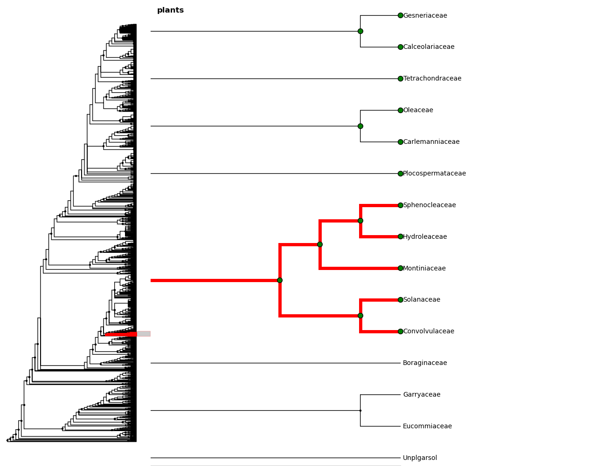

4. Plotting¶
ivy supports interactive tree visualization with Matplotlib.
4.1. Small Trees¶
Displaying a tree is very simple. For interactive tree viewing, you can run
the command from ivy.interactive import *, which imports a number of
convenience functions for interacting with trees. After importing everything
from ivy.interactive, you may, for instance, use readtree instead of
ivy.tree.read and treefig instead of ivy.vis.tree.TreeFigure.
In [1]: from ivy.interactive import *
In [2]: r = readtree("examples/primates.newick")
In [3]: fig = treefig(r)
You can also use the magic command %maketree in the Ipython console to
read in a tree.
In [4]: %maketree
Enter the name of a tree file or a newick string:
examples/primates.newick
Tree parsed and assigned to variable 'root'
In [5]: root
Out[5]: Node(139904996110480, root, 'root')
{kind=link}
A tree figure by default consists of the tree with clade and leaf labels and a navigation toolbar. The navigation toolbar allows zooming and panning. Panning can be done by clicking with the middle mouse button, using the arrow keys, or using the pan tool on the toolbar. Zooming can be done using the scroll wheel, the plus and minus keys, or the ‘zoom to rectangle’ tool in the toolbar. Press t to return default zoom level.
Larger trees are shown with a split overview pane as well, which can be toggled
with the toggle_overview method.
In [6]: fig.toggle_overview()
{kind=link}
You can retrieve information about a node or group of nodes by selecting
them (selected nodes have green circles on them)
and accessing the selected nodes
In [7]: fig.selected
Out [8]:
[Node(139976891981456, leaf, 'Homo'),
Node(139976891981392, 'A'),
Node(139976891981520, leaf, 'Pongo')]
{kind=link}
You can also select nodes from the command line. Entering an internal node will select that node and all of its descendants.
In [9]: fig.select_nodes(r["C"])
{kind=link}
You can highlight certain branches using the highlight method. Again,
entering an internal node will highlight that node and its descendants.
You can optionally show the highlighted branches on the overview panel using
the ov keyword
In [10]: fig.highlight(r["B"], ov=True)
{kind=link}
You can add layers of various kinds using the add_layers method. The
layers module contains various functions for adding layers to the tree,
including images, labels, shapes, etc.
In fact, the highlight method is simply a wrapper for an add_layers
call.
In [11]: from ivy.vis import layers
In [12]: fig.redraw() # This clears the plot
In [13]: fig.add_layer(layers.add_circles, r.leaves(),
colors = ["red", "orange", "yellow", "green", "blue"],
ov=False) # Prevent layer from appearing on overview with ov keyword
{kind=link}
The new layer will be cleared with the next call to fig.redraw. You can
store a layer and draw it every time using the store keyword. We can
access our stored layers through the layers attribute of the figure
As we can see, our figure has “leaflabels” and “branchlabels” as layers, as
well as the new “circles” layer. You can toggle the visibility of a layer
using the toggle_layer method and the layer’s name. The layer is still
there and can be accessed with fig.layers, but it is not visible on
the plot. It can be toggled back on at any time
4.2. Large Trees¶
Oftentimes, the tree you are working with is too large to comfortably fit on
one page. ivy has many tools for working with large trees and creating
legible, printable figures of them. Let’s try working on the plant phylogeny.
In [17]: r = readtree("examples/plants.newick")
In [18]: fig = treefig(r)
{kind=link}
When a tree has a large number of tips (>100), ivy automatically includes an
overview on the side. This tree looks rather cluttered. We can try to clean it
up by ladderizing the tree and toggling off the node labels
In [19]: fig.ladderize()
In [20]: fig.toggle_branchlabels()
{kind=link}
Here you can see that when all of the tip labels do not fit on the tree, the plot automatically only draws as many labels as will fit.
Let’s say we only want to look at the Solanales. The highlight function,
combined with the find function, is very useful when working with large
trees.
In [21]: sol = fig.find("Solanales")[0]
In [22]: fig.highlight(sol)
{kind=link}
We can zoom to this clade with the zoom_clade function.
In [23]: fig.zoom_clade(sol)
{kind=link}
Maybe we want to zoom out a little. We can select a few clades...
{kind=link}
And then zoom to the MRCA of the selected nodes
In [24]: c = fig.root.mrca(fig.selected)
In [25]: fig.zoom_clade(c)
{kind=link}
Another benefit to using ivy interactively is ivy‘s node autocomplete
function. You can type in the partial name of a node and hit tab to
autocomplete, just like with any other autocompletion in ipython.
In [26]: fig.root["Sy # Hit tab to autocomplete
Sylvichadsia Symplocaceae Synoum Syrmatium
In [27]: fig.root["Sym # Hitting tab will complete the line
In [28]: fig.root["Symplocaceae"]
Out[28]: Node(139904995827408, leaf, 'Symplocaceae')
ivy also has tools for printing large figures across multiple pages. The
figure method hardcopy creates an object that has methods for creating
PDFs that can be printed or placed in documents. To print a large figure
across multiple pages, you can use the render_multipage method of a
hardcopy object. For more information, look at the documentation for
render_multipage. The following code will create a PDF that has the figure
spread across 4x4 letter-size pages.
In [29]: h = fig.hardcopy()
In [30]: h.render_multipage(outfile="plants.pdf", dims = [34.0, 44.4])